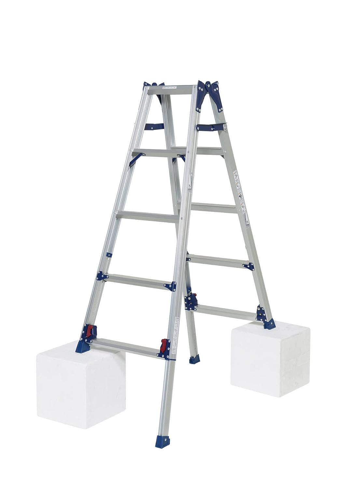
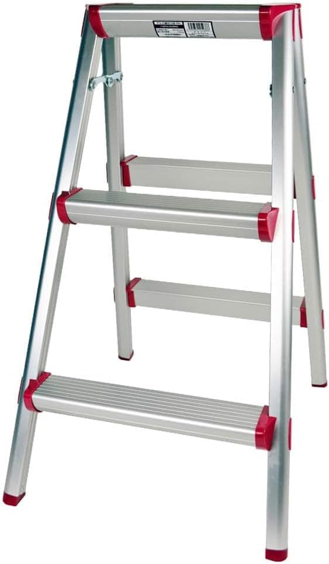
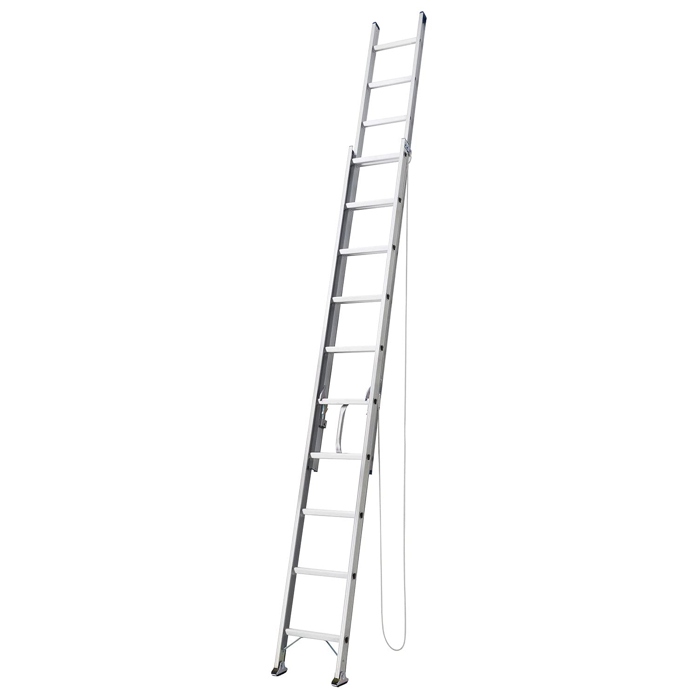
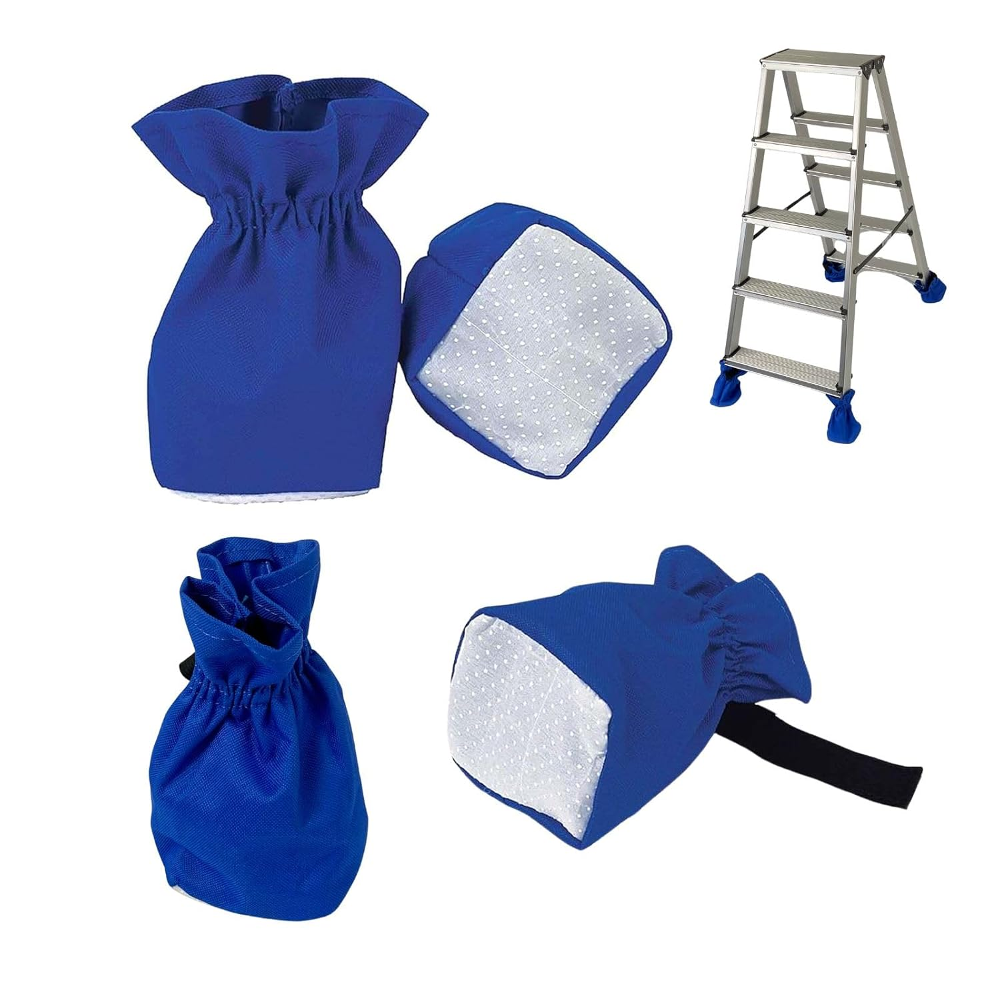

向いている人
- 屋内作業の脚立基準を決めたい人
- 5尺・7尺・踏台・はしごを使い分けたい人
- 内装保護や脚立カバーも含めて考えたい人
脚立やはしごは、単純に高いものを選べばよいわけではありません。天井配線・器具交換・点検・昇降・内装保護など、作業内容で必要な道具が変わります。
電気工事では、屋内標準作業は5尺脚立を基準にし、5尺で届かない作業は7尺、屋根や設備へ上がる目的なら2連はしごというように役割を分けると判断しやすいです。
「立って作業する」のか、「上り下りする」のかを分けます。脚立は作業姿勢を作る道具、はしごは昇降する道具として考えると、現場での迷いが減ります。

先輩脚立とはしごは、どちらも高い場所に関係するけど役割は違うよ。脚立は作業用、はしごは昇降用で考えると分かりやすい。

新人高さだけで選ぶんじゃなくて、そこで作業するのか、上に行くためなのかを先に見るんですね。
先輩そう。あと2mを超える作業は、慣れで雑にならないようにルールを固定しておくのが大事だね。
まずは、道具ごとの役割を分けて整理します。
天井配線・器具交換・点検など、作業姿勢を作るための道具です。屋内標準は5尺を基準にしやすいです。
室内の短時間作業や点検向けです。手軽ですが、無理な姿勢になるなら脚立へ切り替えます。
屋根や設備への昇降用です。脚立の代わりに作業台のように使わないように注意します。
内装仕上げ後や床養生が必要な現場で、床傷リスクを下げる補助アイテムです。
2m超を含む作業は、高所作業として注意を一段上げます。普段使いの脚立と区別したり、手順を固定したりして、慣れによる省略を防ぐのが実務的です。
脚立・踏台・はしごは、用途を分けて見ると選びやすくなります。
| モデル | 向いている人 | 向いていない人 | 注意点 |
|---|---|---|---|
| SCL-150A | 屋内作業中心で、まず1台を決めたい人 | 常に2m超の高さが必要な人 | 段差調整は便利でも、足場確認を省略しない |
| SCL-210A | 5尺で届かない場面が定期的にある人 | 軽快さ最優先で短時間作業が多い人 | 2m超を含むため、高所前提で手順を固定する |
| コーナン 3段踏台 | 室内の点検・交換を素早く回したい人 | 屋外段差や長時間作業が多い人 | 楽だからと無理な姿勢を取らない |
| HE2-2.0-41 | 屋根・設備へ昇降する作業がある人 | 室内のちょい高作業だけの人 | 設置角度・接地状態を毎回確認する |
| ONE STEP 脚立カバー | 内装や床養生を重視する現場が多い人 | 屋外中心で消耗が気にならない人 | ずれ・摩耗が出たら交換する |
屋内標準ならSCL-150A、5尺で届かない現場があるならSCL-210A、室内の短時間作業なら3段踏台、昇降目的ならHE2-2.0-41、内装保護なら脚立カバーを合わせて考えます。
現行記事の商品画像とAmazonリンクを維持して、用途別に整理しています。

屋内の配線・器具交換・点検が中心なら、標準運用の基準にしやすい5尺脚立です。
四脚アジャスト式なので、段差のある現場でも調整しやすく、屋内作業の最初の1台として見やすい候補です。
ただし、段差対応できるからといって足場確認を省略しないことが大切です。
屋内作業中心でまず1台を固めたい人、5尺で届く範囲の作業が多い人、標準脚立を決めたい人に向いています。

5尺では届かない場面が定期的にある人向けの7尺脚立です。
高めの天井まわりや、標準脚立だけでは届きにくい作業がある現場で候補になります。
2m超を含むため、高所作業として手順を固定し、慣れで省略しない運用が大切です。
5尺で届かない作業が定期的にある人、高所寄りの現場比率が高い人、標準脚立とは別に高め作業用を分けたい人に向いています。

室内の点検・交換を素早く回したい時に便利な3段踏台です。
脚立を出すほどではない短時間作業や、ちょっとした確認作業で扱いやすいサブ候補です。
ただし、届かないのに無理な姿勢で作業するなら、脚立へ切り替えます。
室内作業が多い人、点検や交換を短時間で回したい人、脚立とは別にサブ用の踏台を持ちたい人に向いています。

屋根や設備に上がる工程がある人向けの2連はしごです。
室内のちょい高作業ではなく、昇降用途として脚立と別枠で準備すると判断しやすくなります。
設置角度・滑り・接地状態を毎回確認し、脚立の代替として乱用しないことが大切です。
屋根や設備へ上がる作業がある人、昇降用とはっきり分けて持ちたい人、脚立だけでは対応できない現場がある人に向いています。

内装仕上げ後や床養生を重視する現場で、脚立の足元による傷リスクを下げる補助アイテムです。
室内現場では、脚立本体だけでなく脚立カバーもセットで考えると安心感が上がります。
汚れ・摩耗・ずれがある状態で使い続けると保護性能が落ちるため、状態確認も必要です。
内装仕上げ後の現場に入る人、床傷リスクを下げたい人、室内作業の養生品質を安定させたい人に向いています。
まずは普段の現場で一番多い作業から決めます。最初から全部そろえるより、標準脚立と補助を組み合わせる方が現実的です。
5尺のSCL-150Aを基準にします。配線・器具交換・点検の標準用として見やすいです。
SCL-210Aを追加候補にします。2m超を含むため、高所作業として運用を分けます。
3段踏台が便利です。ただし無理姿勢になりそうなら、脚立へ切り替えます。
2連はしごを別枠で準備します。脚立の代用ではなく、昇降用として扱います。
新人まず5尺を基準にして、届かない時は7尺、昇降なら2連はしごって分ければいいんですね。
先輩うん。あと室内の仕上げ現場なら脚立カバーも忘れない方がいい。床傷は工具選びだけじゃなく、現場の信頼にも関わるからね。
2m超を含む作業は、いつもの脚立作業と同じ感覚で流さず、高所作業として注意を一段上げます。
設置面確認、開き止め確認、昇降時の持ち物管理、無理姿勢の禁止、脚立とはしごの用途分離を毎回確認します。
2m超を使う脚立は目印を付ける、通常運用の脚立と保管場所を分けるなど、現場で自然に注意できる仕組みにしておくと省略を防ぎやすいです。
脚立やはしごは日常的に使う道具だからこそ、慣れで確認が雑になりやすいです。道具の性能だけでなく、使い方のルールまで含めて選びます。
※当サイトはAmazonアソシエイト・プログラムに参加しており、適格販売により収入を得ています。